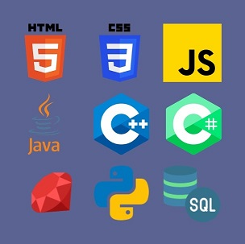
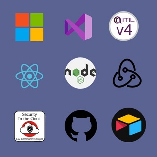

Hello World!
Lee is a creative web designer
and full stack developer currently based in Los Angeles.
Expecting to graduate from LATTC this summer, Lee is
looking for remote work opportunities and collaborations.
Creative Lee's Skills include:
Programming Languages

Frame Works and Platforms

Advanced Soft Skills
Lee is skilled in concise communication and documentation with an excellent attention to detail. They're a creative problem solver, a critical thinker, a curious learner and a patient teacher. Lee has demonstrated that they can be both an effective team leader and reliable team player. Lee is capable of maintaining a friendly and professional demeanor under stressful circumstances. Lee takes pride in being resourceful and intentional with the work they do. Lee strives to be culturally competent and to empower the people that need it most.
Hello World.
Lee is a creative web designer
and full stack developer currently based in Los Angeles.
Expecting to graduate from LATTC this summer, Lee is
looking for remote work opportunities and collaborations.
Programming Languages
Lee has learned several programming languages and continually strives to improve these skills.
Lee is very experienced with developing responsive websites using HTML5, CSS, and Javascript.
Lee is also very familiar with Visual Studio and has used it to create C++ and C# GUI programs.
They've worked with relational databeses and completed several SQL projects using Microsoft Access.
They have a little experience with mobile app development using Android Studio and Java. Most recently, Lee has started strengthening their Python skills and is learning Ruby on Rails.
Frameworks and Platforms
Lee is very familiar with Microsoft suite and the Windows OS. They've earned the ITIL4 certification and are pursuing the CompTIA A+ certificate. They are currently learning REACT, Redux, and Node.js on Udemy. Lee earned a Security in the Cloud badge and is becoming more familiar with AWS. Lee has also been using GitHub for version control and to facilitate collaboration. And most recently, Lee has started using Airtable to improve their productivity.
Advanced Soft Skills
Over Lee's professional career, they've developed many other transferrable skills. Lee has extensive experience in customer service, interpretation, curriculum development and project management. Lee is skilled in concise communication and documentation with an excellent attention to detail. They're a creative problem solver, a critical thinker, a curious learner and a patient teacher. Lee has demonstrated that they can be both an effective team leader and reliable team player. Lee is capable of maintaining a friendly and professional demeanor under stressful circumstances. Lee takes pride in being resourceful and intentional with the work they do. Lee strives to be culturally competent and to empower the people that need it most.